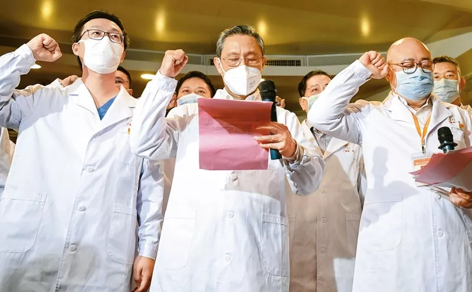
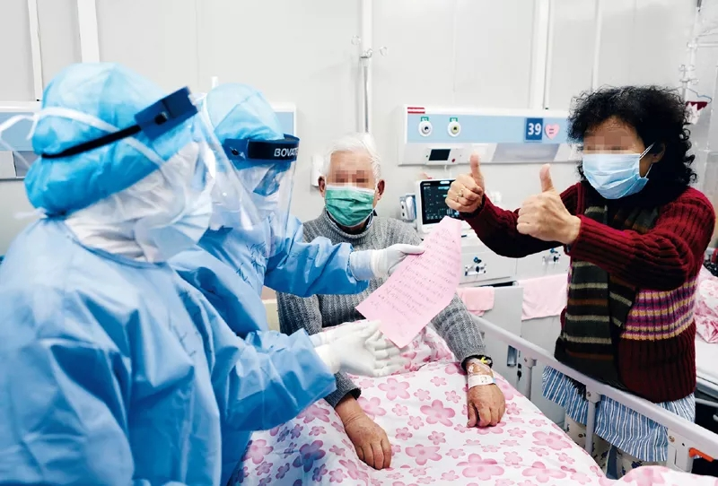
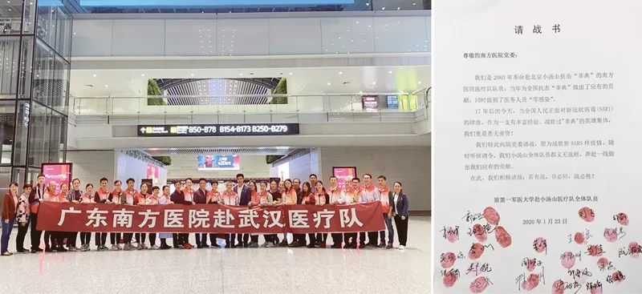
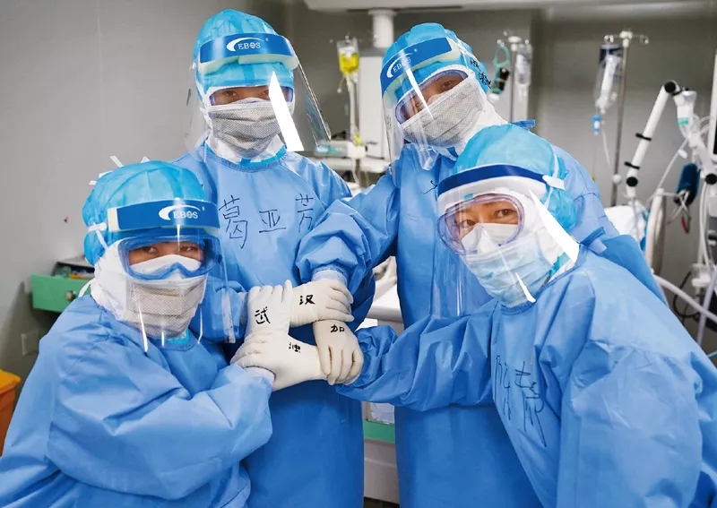
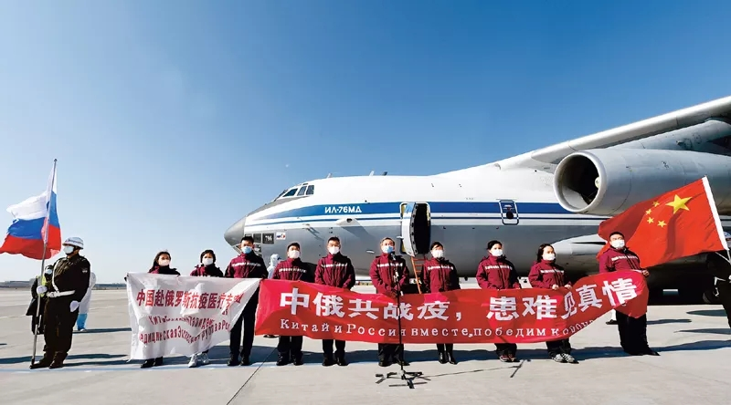

编者按：2020年9月8日，全国抗击新冠肺炎疫情表彰大会在京隆重举行，习近平总书记向国家勋章和国家荣誉称号获得者颁授勋章奖章并发表重要讲话。习近平总书记强调，伟大抗疫精神，同中华民族长期形成的特质禀赋和文化基因一脉相承，是爱国主义、集体主义、社会主义精神的传承和发展，是中国精神的生动诠释，丰富了民族精神和时代精神的内涵。总书记明确提出了“生命至上、举国同心、舍生忘死、尊重科学、命运与共”的伟大抗疫精神，并作出深刻阐述。
2020年3月2日，广州医科大学附属第一医院举行首批战“疫”一线火线发展党员的入党宣誓仪式。图为钟南山院士（前中）领誓。新华社记者 邓华/摄

★ 生命至上，集中体现了中国人民深厚的仁爱传统和中国共产党人以人民为中心的价值追求。
根据国家政策，新冠肺炎患者治疗费用纳入医保，自费部分由财政补助，为患者免除了经济负担；同时通过温情照料、精准护理、健康教育和特色呵护等，减轻患者精神压力，帮助患者更好治疗和恢复。图为2020年3月4日，在火神山医院感染三科一病区的“家病房”，一对老年夫妇十分牵挂患病入院的子女，护士们帮他们传递亲情信息。 人民日报记者 李舸/摄

在保护人民生命安全面前，我们必须不惜一切代价，我们也能够做到不惜一切代价，因为中国共产党的根本宗旨是全心全意为人民服务，我们的国家是人民当家作主的社会主义国家。我们果断关闭离汉离鄂通道，实施史无前例的严格管控。作出这一决策，需要巨大的政治勇气，需要果敢的历史担当。为了保护人民生命安全，我们什么都可以豁得出来！从出生仅30多个小时的婴儿到100多岁的老人，从在华外国留学生到来华外国人员，每一个生命都得到全力护佑，人的生命、人的价值、人的尊严得到悉心呵护。
★ 举国同心，集中体现了中国人民万众一心、同甘共苦的团结伟力。
面对新型冠状病毒肺炎疫情的突然来袭，白衣战士们主动请缨，奋战于抗击疫情一线，用行动践行了共产党员“随时准备为党和人民牺牲一切”的初心和誓言。左图为1月24日，除夕之夜，南方医院赴武汉医疗队成员响应国家号召，紧急支援湖北省疫情救治工作。其中，有两人曾参与2003年原第一军医大学南方医院赴小汤山医疗队（新华社发）。右图为原第一军医大学南方医院赴小汤山医疗队全体队员的请战书。

长城内外、大江南北，全国人民心往一处想、劲往一处使，把个人冷暖、集体荣辱、国家安危融为一体，“天使白”、“橄榄绿”、“守护蓝”、“志愿红”迅速集结，“我是党员我先上”、“疫情不退我不退”，誓言铿锵，丹心闪耀。14亿中国人民同呼吸、共命运，肩并肩、心连心，绘就了团结就是力量的时代画卷！
★ 舍生忘死，集中体现了中国人民敢于压倒一切困难而不被任何困难所压倒的顽强意志。
在抗击新冠肺炎疫情的最前沿“红区”，白衣天使们打赢了一场场与病毒的“生死战”。图为2020年3月20日，武汉火神山医院重症医学一科的护士们合影为武汉加油。 新华社记者 王毓国/摄

危急时刻，又见遍地英雄。各条战线的抗疫勇士临危不惧、视死如归，困难面前豁得出、关键时刻冲得上，以生命赴使命，用大爱护众生。面对疫情，中国人民没有被吓倒，而是用明知山有虎、偏向虎山行的壮举，书写下可歌可泣、荡气回肠的壮丽篇章！中华民族能够经历无数灾厄仍不断发展壮大，从来都不是因为有救世主，而是因为在大灾大难前有千千万万个普通人挺身而出、慷慨前行！
★ 尊重科学，集中体现了中国人民求真务实、开拓创新的实践品格。
面对前所未知的新型传染性疾病，我们秉持科学精神、科学态度，把遵循科学规律贯穿到决策指挥、病患治疗、技术攻关、社会治理各方面全过程。在没有特效药的情况下，实行中西医结合，先后推出八版全国新冠肺炎诊疗方案，筛选出“三药三方”等临床有效的中药西药和治疗办法，被多个国家借鉴和使用。无论是抢建方舱医院，还是多条技术路线研发疫苗；无论是开展大规模核酸检测、大数据追踪溯源和健康码识别，还是分区分级差异化防控、有序推进复工复产，都是对科学精神的尊崇和弘扬，都为战胜疫情提供了强大科技支撑！
★ 命运与共，集中体现了中国人民和衷共济、爱好和平的道义担当。
面对全球新冠肺炎疫情持续蔓延的严峻形势，中国政府派出多支抗疫医疗专家组支持世界各国的抗疫行动，应对人类共同的敌人。图为2020年4月11日，中国政府赴俄罗斯抗疫医疗专家组启程。新华社记者 徐旭/摄

我们秉承“天下一家”的理念，不仅对中国人民生命安全和身体健康负责，也对全球公共卫生事业尽责。我们发起了新中国成立以来援助时间最集中、涉及范围最广的紧急人道主义行动，为全球疫情防控注入源源不断的动力，充分展示了讲信义、重情义、扬正义、守道义的大国形象，生动诠释了为世界谋大同、推动构建人类命运共同体的大国担当！
来自: 求是网；作者： 张淑虹 编制